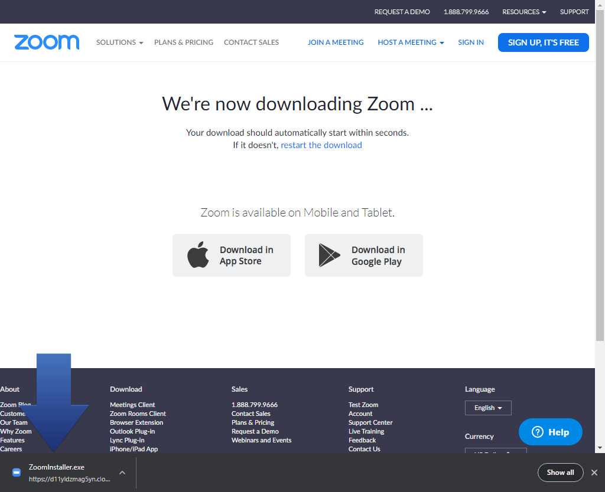
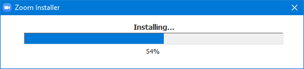
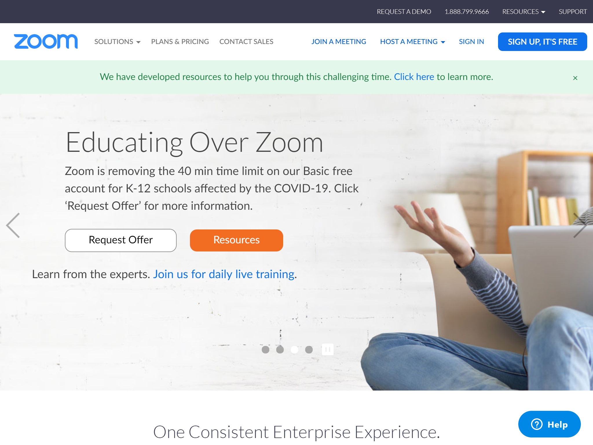
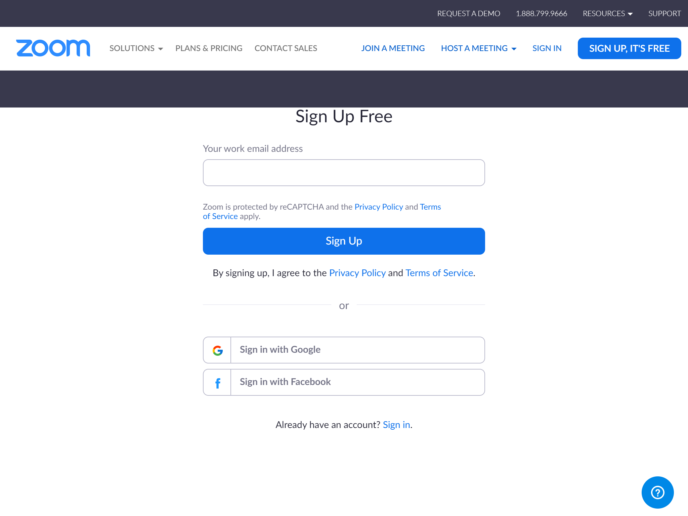
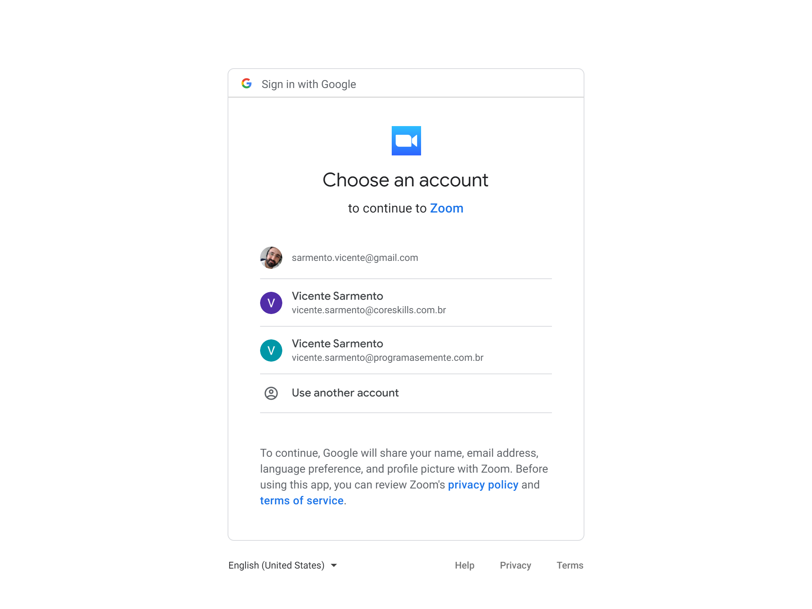
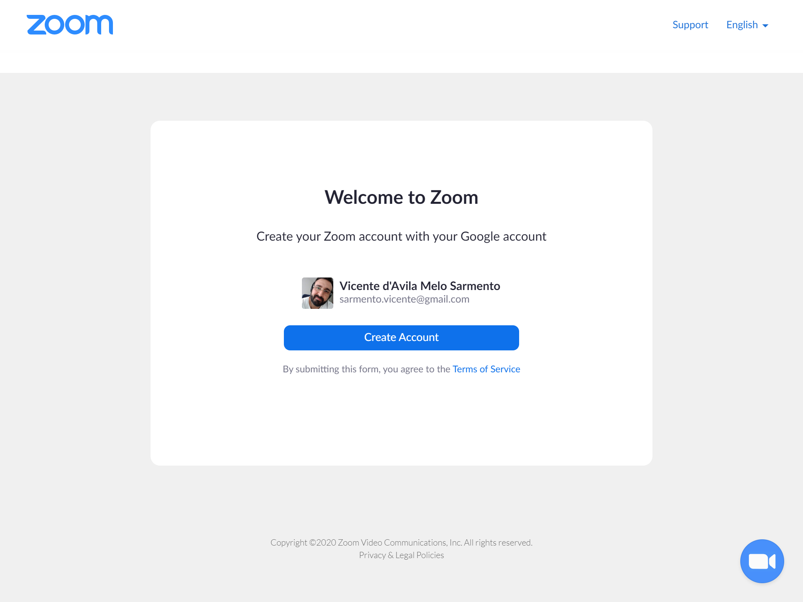
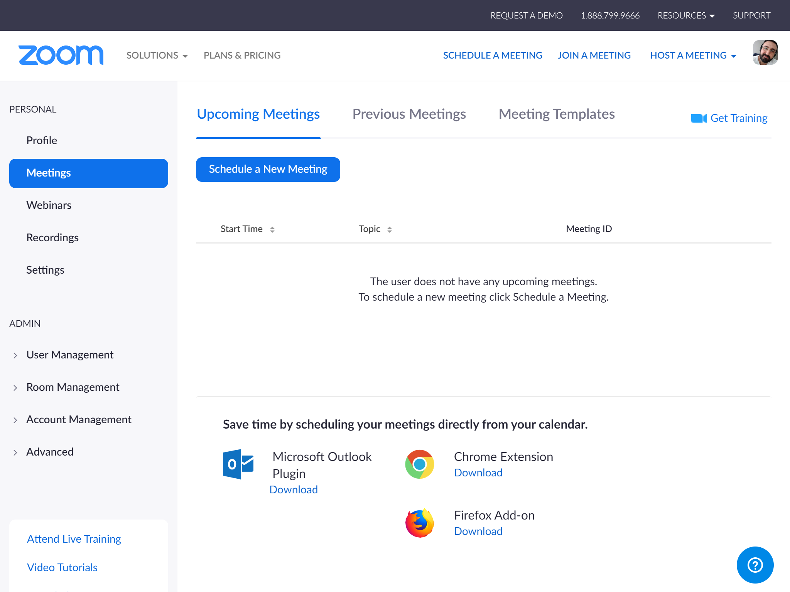
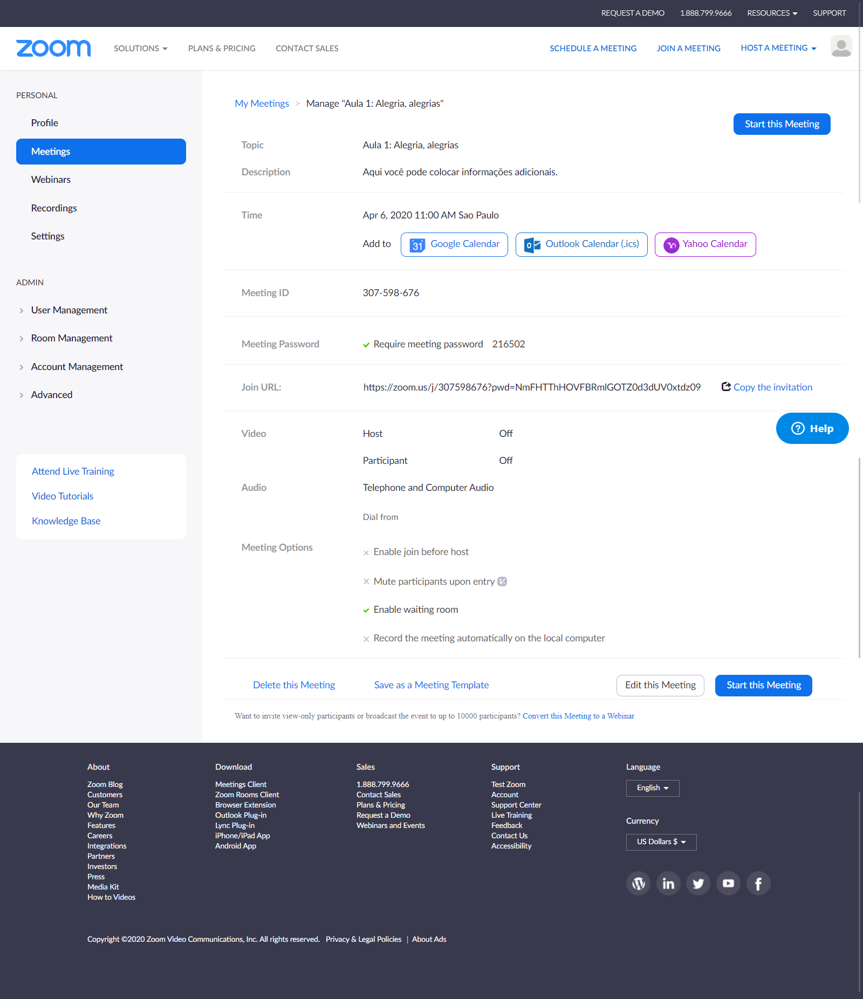
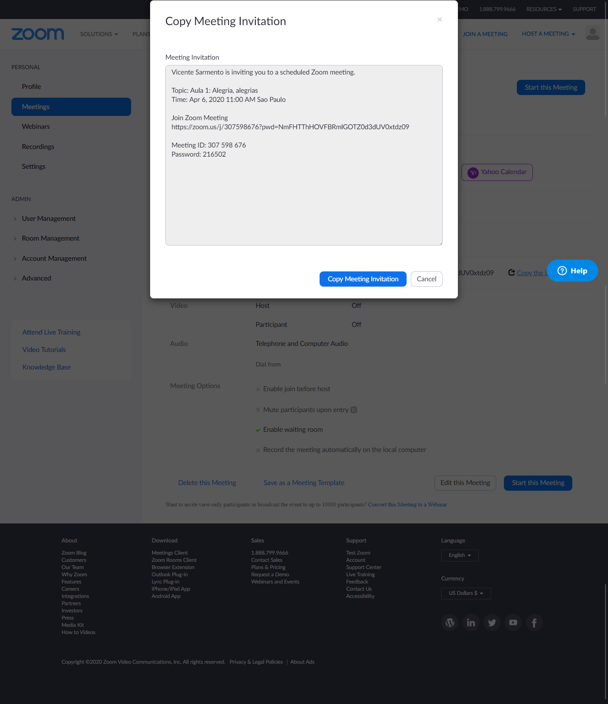
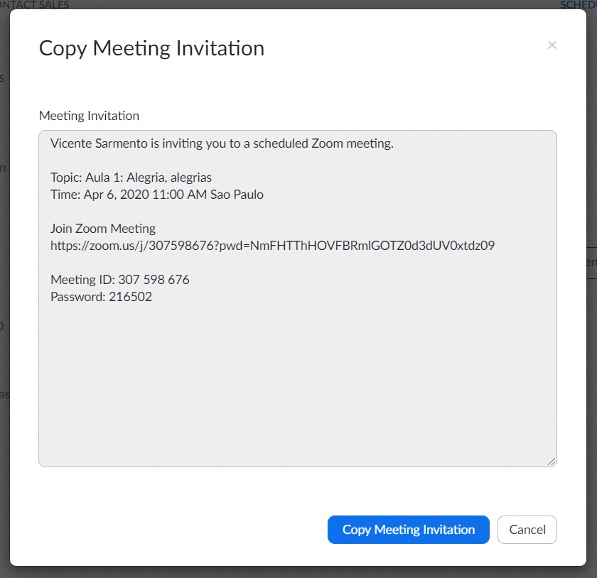

Aula online: como usar o Zoom
Este é um passo a passo para professores que queiram dar aula por meio da Internet utilizando o aplicativo Zoom - e que não se sentem à vontade para se aventurar em novas tecnologias sem um ombro amigo. Essa página será seu ombro amigo.
Vale comentar que aqui você não verá uma orientação pedagógica de como preparar ou dar aulas online. As adequações para aulas online não fazem parte do escopo dessa página.
O passo a passo de instalação do Zoom no celular será acrescentado assim que ficar pronto. Está no forno assando como aquele delicioso bolo da vovó...
O básico
O botão mágico para fazer videoconferências não existe... ainda. Enquanto ele não vem, vamos entender basicamente o que precisa ser feito.
Resumidamente para usar o Zoom você precisará:
- Criar uma conta no Zoom;
- Criar uma sessão de videoconferência;
- Compartilhar o número da sessão e senha para seus alunos.
Depois que fizer isso, é esperar que os alunos entrem na sessão ao mesmo tempo que você e boa aula.
Agora que viu como a ideia é simples, vamos aos pormenores de como fazer o simples acontecer.
Fazendo o simples acontecer
Há uma lista com orientações rápidas logo abaixo, cada uma com um único objetivo.
Estas orientações são compostas por etapas numeradas e imagens para facilitar o acompanhamento. Vale comentar que todas as imagens usadas são imagens representativas! Desta forma, ao clicar nas imagens e nos botões nelas apresentados você não verá efeito algum - exceto uma pequena frustração por nada acontecer.
Quem já tem alguma familiaridade com o Zoom, mas não conhece tudo sobre sua aplicação, pode achar útil o passo a passo de como ver todas as pessoas, de gravar a aula ou ainda o de como remover pessoas da sessão.
As orientações
- Como instalar o Zoom (no computador)
- Criar uma conta no Zoom
- Como iniciar uma sessão
- Como ver todas as pessoas
- Salvar a aula
- Remover pessoas
Instalar o Zoom
-
Instalar o Zoom primeiro é uma sugestão para simplificar etapas.
Se você começar pelo passo a passo Criar uma conta Zoom e logo depois for para o Como iniciar uma sessão, você acabará instalando o aplicativo em algum momento, mas terá trilhando um outro caminho, diferente do que será apresentado abaixo.
-
Acesse o link https://zoom.us/support/download e, automaticamente, o download do Zoom começará.
-
Uma seta bonitona irá aparecer no canto inferior esquerdo do seu navegador, mostrando onde o arquivo está sendo salvo.
 -
Após concluir o download, acesse o arquivo e abra-o. Uma janela do "Zoom Installer" com o texto "Installing" irá se abrir. Aguarde completar o processo.
Agora você já está com a aplicação instalada. Vá para Criar uma conta Zoom e siga os passos para... criar uma conta no Zoom.
Criar uma conta no Zoom
-
Entre em https://www.zoom.us/
-
Clique no botão "SIGN UP, IT'S FREE", no canto superior direito da tela.
 -
Escolha a forma mais adequada de cadastro para você. No meu caso eu escolhi "Sign in with Google" (Fazer regsitro por meio da conta do Google).
 -
Caso tenha escolhido o Google, você verá uma etapa padrão de cadastro via contas do Google.
Se possuir mais de uma conta Google, escolha uma para avançar.
 -
Tela de boas vindas ao Zoom! Maravilha!
Clique em "Create Account" (Criar conta) para efetivamente criar sua conta.
 -
Conta criada! Agora você pode iniciar uma sessão!

Iniciando uma sessão
-
Antes de tudo, acesse o Zoom e faça login (seja por e-mail, conta do Google ou Facebook).
Se você ainda não possui uma conta no Zoom, vá para Criar uma conta no Zoom e depois volte aqui!
-
Para iniciar uma sessão, clique em "Schedule a New Meeting". É um botão azul bonito como o da imagem abaixo. Ele fica quase no centro da tela, na área branca.
-
Agora vem um longo formulário com opções para sua sessão. Como esta é uma tela importante, você pode conferir uma versão da imagem abaixo em português.
Considerando necessidades de professores e escolas, abaixo estão os itens mais importantes:
- When (Quando): É o dia e hora em que acontecerá a aula. Aparentemente o Zoom considera o dia e hora da sua máquina (de forma que você não consiga marcar uma sessão para, literalmente, ontem.
- Meeting ID (ID da sessão): É a identificação da aula. Para que seja sempre o mesmo número, independente da turma para qual você irá dar aula, marque a opção "Personal Meeting ID XXX-XXX-XXXX".
- Meeting Password (Senha da sessão): senha para entrar na sessão. Aqui não cabe muito a criatividade, uma vez que não deve ser uma barreira a entrada dos alunos. Usar seu nome, sobrenome ou apelido (para ficar divertido) seja uma boa opção.
- Video: você decide aqui se irá liberar seu video (Host) e se liberará o video dos participantes (Participant). Para permitir marque "on" e marque "off" para não permitir o compartilhamento de video.
- Meeting Options (Opções da sessão): talvez a opção mais importante aqui seja a última "Record the meeting automatically on the local computer" ou no bom português "Gravar a sessão automaticamente no seu computador".
-
Confira todas as informações sobre a sessão.
Para divulgar para seus alunos, você precisará do link da sessão. Você pode ver uma prévia do convite clicando em Copy the invitation (copiar o convite), no sexto bloco de informação chamado "Join URL" (endereço de encontro).
 -
Abrirá um novo elemento com as informações do convite para você conferir..
 -
Clique no botão azul Copy Meeting Invitation
Aparecerá no topo um alerta verde com a mensagem Copied to clipboard (Copiado para a área de transferência), que na mais é que um alerta avisando que você pode colar o convite onde quiser - conhecido como CTRL + V (no Windows) ou Cmd + V (no Mac).

Como ver todas as pessoas
Salvar a aula
Remover pessoas
Por que o Zoom?
O Zoom é uma ferramenta para videoconferências de fácil instalação e uso.
O aplicativo oferece um tipo de conta para uso pessoal - Basic - que permite videoconferências com até 100 participantes e transmissões de até 40 minutos. Não há limite para o número de reuniões.
Ele possui dois recursos importantes e que são fundamentais para algumas instituições:
- Videoconferência pode ser gravada: de posse do vídeo da videoconferência, outras pessoas poderão consumir aquele mesmo conteúdo posteriormente;
- Telas do computador podem ser compartilhadas: permite que apresentações em PowerPoint, vídeos e outros recursos sejam apresentados para todos os participantes durante a videoconferência.
Como o intuito é ajudar o maior número de pessoas, esta página poderá receber atualizações sem aviso prévio. Dúvidas e dificuldades que forem sendo relatadas ditaram o ritmo dessas mudanças.
A aquisição de uma licença para o uso legal do Zoom por parte da escola ou instituição é de bom tom e o correto a se fazer. Pandemia a parte, fazer o legal/correto é sempre a melhor opção.